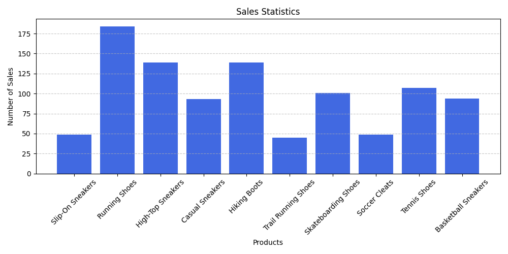

ImageEditor
ImageEditor is a Python desktop project that applies creative effects to images. It reliably supports Pop Art and Black & White filters, while the Pencil Sketch filter works only for certain images and is less practical for general photos. The project leverages PIL, OpenCV, and face_recognition for image processing and organizes processed images into dedicated folders for easy management.
PythonJobsScraperVienna
PythonJobsScraperVienna is a Python project that scrapes recent Python job listings in Vienna from karriere.at. It uses Requests and BeautifulSoup to extract job titles, company names, and links, filtering out senior positions to focus on junior roles. The results are printed in a clean, structured format for easy reference or further processing.
ProductSalesTracker
ProductSalesTracker is a Python application that tracks product sales and visualizes data. It reads sales data from a text file, generates a CSV summary, and creates bar charts using Matplotlib. The project helps visualize sales statistics and monitor product performance efficiently, making it useful for small businesses or personal projects.
Quiz Game
Quiz Game is a Python console application that lets players test their knowledge across customizable topics.
It features randomized questions, multiple-choice answers, and score evaluation with personalized feedback.
The game includes a dynamic question bank stored in game_db.py, where users can add or remove topics
and questions. This project highlights skills in file handling, persistence, modular design, and robust input validation.
TheCashRegister

TheCashRegister is a desktop application I developed to simulate a cash register during my time working at a bar without proper POS equipment. Built with Python and Tkinter, I ran it on my phone via Pydroid, creating an interactive GUI that allowed me to add products, assign prices, and track customers’ baskets throughout the night. The app calculated cumulative totals and, at the end of the shift, enabled exporting sales data for bookkeeping and analysis. While the experiment worked smoothly for two months, updates in Pydroid introduced ads that caused freezes, effectively ending its use.